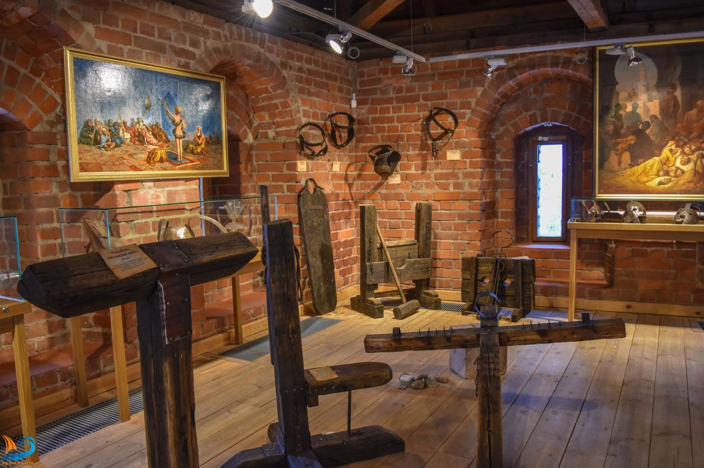

.
Лидский замок


Лидский замок единственный на территории Беларуси действующий
замок-кастель. Он возведен в 1323 г. на слиянии рек Лидеи и Каменки
Великим князем Литовским — Гедимином. Как свидетельствуют литературные
источники за семь неполных веков Лидский замок играл значительную роль в
истории. В 1387 г. польский король и Великий князь Литовский Ягайло
принимал в замке присягу от своего брата Скиргайлы, полоцкого князя, в
1422 г. в замке отмечался брак короля Ягайло с 17-летней Софией
Гольшанской, в июле 1506 г. в стенах замка причастился и подписал
завещание смертельно больной король польский и Великий князь Литовский. В
XIV в. стены Лидского замка не раз выдерживали натиск крестоносцев.
Впервые под замковыми стенами они появились в 1392 г., когда болота вокруг
укрепления сковал лед. Во времена правления короля Речи Посполитой Яна
Казимира Лида получила магдебургское право. Замок принадлежал государству
и охранялся местной шляхтой. Здесь размещались склады оружия, гарнизон. В
середине XVII — начале XVIII в. мирная жизнь города Лиды была прервана
войной. Летом 1659 г. замок со всех сторон окружило 30-тысячное войско
царского воеводы Ивана Хованского. Сильный удар замку нанесли шведы,
которые в начале XVIII в. взорвали обе башни, и укрепление утратило свое
стратегическое значение. Стены его постепенно разрушались. Однако в
уцелевших помещениях хранились городские акты и проходили суды. Почти
окончательно замок разрушился летом 1794 г .: в его руинах вели бой с
царскими войсками повстанцы Тадеуша Костюшко. После пожара 1891 г. без
каких-либо обсуждений начали ломать замковые стены и пускать кирпич и
камни на продажу. Слухи о разборе замка дошли до Императорской
археологической комиссии. В Лиду был направлен сотрудник Комиссии Петр
Петрович Покрышкин. После его доклада Комиссия запретила прикасаться к
стенам замка. В начале ХХ в. была выполнена некоторая укрепляющяя работа.
Была создана Строительная комиссия по ремонту Лидского замка. За время с
1909 по 1911 года были приведены в надлежащее состояние западная, северная
и восточная стены, что же касается южной стены, то она, как наименее
требовала ремонта, была оставлена без него. В 20-ые годы, когда по
Рижскому договору Западная Беларусь вошла в состав Польши, в Лидском замке
были проведены незначительно реставрационные работы польскими
реставраторами под руководством молодого архитектора Тадеуша Буршэ. Были
соединены каменной огородкой западная и южная стены, частично восстановили
поврежденный юго-восточный угол и заложили боковые входы. На месте
повреждённого северно-западного угла появились деревянные ворота. Летом
здесь останавливался бродячий цирк или зверинец, а зимой посреди двора
ставили ёлку и заливали каток. 22 января 1940 г. Лидский замок получил
статус памятника архитектуры. В июле 1941 г. на территории замка был
лагерь военнопленных 56 Московской военной дивизии. В 1967 году решением
местных властей Лидский замок передан под шефский надзор строительному
тресту № 19. В 1975 г. Лидский замок как памятник архитектуры ХIV в.,
которому необходимо реставрация получил номер №129 / 75. В 1976 г
Специальные научно-реставрационные производственные мастерские при
Министерстве культуры БССР получили заказ на консервацию, а вскоре и на
полную реставрацию Лидского замка. Реставрационные работы начались в 1978
г. предполагалось, что полная реставрация будет завершена в 1985 г. К 1980
были завершены северная, восточная и частично южная стены и была близка к
завершению северо-восточная башня. К сожалению, реставрационные работы не
были завершены и остановились из-за недостатка финансирования в середине
1990-х гг. В 2001 г. на республиканском уровне было принято решение о
разработке проекта проведения первоочередных противоаварийных работ в
замке. Проект подготовили в 2003 году, но средств на его осуществление не
нашли. В 2004 году Министерство культуры рекомендовало Гродненскому
облисполкому разобрать аварийные участки западной стены и недостроенной
юго-западной башни. Рассмотреть вопрос о дальнейшем использовании
северо-восточной башни. 23 апреля 2005 г. состоялся общереспубликанский
субботник. Начало нового этапа реставрации Лидского замка датируется 2006
годом, когда КУП «Минскпроект» приступила к проектным работам. Были
выполнены архитектурные обмеры замка. Целью реставрации было вернуть замку
облик, который он мог иметь в XIV в. В январе 2010г. стало известно, что в
сентябре в Лиде пройдут «Дожинки-2010» .Темп работ ускорило подготовка к
будущим «Дожинкам». За весну и лето 2010 г. стены и юго-западная башня
были достроены, деревянная галерея с новыми консольными балками и брусом,
покрытая черепицей, соединила башни, замковый двор был засыпан песком и
щебнем. В декабре 2017 года была открыта выставочная экспозиция «Лідскі
замак. Гістарычныя падзеі і постаці»в северо-восточной башне Лидского
замка.